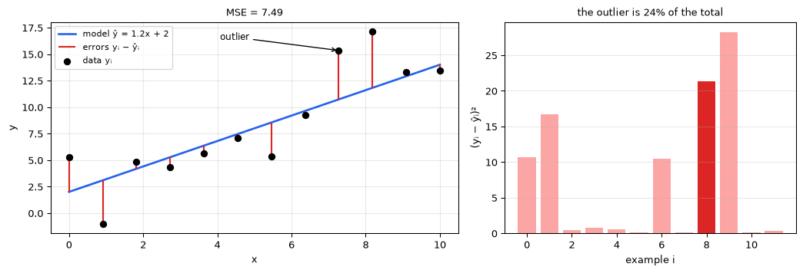
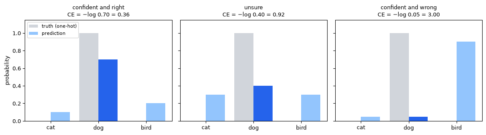
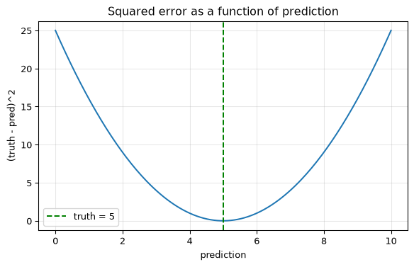
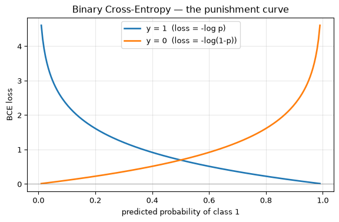

Loss Functions
The score the optimiser is trying to minimise. Regression tasks use MSE; classification tasks use cross-entropy. This note derives both, works them by hand, and covers when to use each.
01 What a loss function is
A single number that measures "how wrong is the model on this batch". The whole training loop is about making it smaller.
The three-piece picture
Every supervised training step needs three things:
- A model f_\theta producing predictions \hat{y} = f_\theta(x).
- True targets y.
- A loss function L(y, \hat{y}) that returns a scalar.
The optimiser adjusts \theta to reduce L averaged over the training set.
Requirements
A good loss function should:
- Return a scalar. You can't backprop through a vector loss without collapsing it first.
- Be differentiable with respect to \hat{y} (and therefore \theta).
- Match the task. Regression losses assume real-valued outputs; classification losses assume probabilities.
- Have a sensible minimum. L = 0 should mean "perfect predictions".
The two dominant losses
- MSE (Mean Squared Error) — for regression.
- Cross-entropy — for classification.
Almost everything else in DL is a variant of these two.
02 Mean Squared Error — for regression

Python code for this figure
import numpy as np
import matplotlib.pyplot as plt
rng = np.random.default_rng(3)
x = np.linspace(0, 10, 12); y = 1.2 * x + 2 + rng.normal(0, 1.6, x.size)
y[8] += 6 # one outlier
w, b = 1.2, 2.0 # a model's line
yhat = w * x + b
fig, axes = plt.subplots(1, 2, figsize=(11, 3.8), gridspec_kw={"width_ratios": [1.4, 1]})
ax = axes[0]
ax.plot(x, yhat, color="#2563eb", lw=2, label="model ŷ = 1.2x + 2")
ax.vlines(x, yhat, y, color="#dc2626", lw=1.6, label="errors yᵢ − ŷᵢ")
ax.scatter(x, y, color="k", zorder=3, label="data yᵢ")
ax.annotate("outlier", (x[8], y[8]), (x[8] - 3.2, y[8] + 1), arrowprops=dict(arrowstyle="->"), fontsize=9)
ax.set_xlabel("x"); ax.set_ylabel("y"); ax.legend(fontsize=8.5); ax.grid(alpha=0.3)
ax.set_title(f"MSE = {np.mean((y - yhat) ** 2):.2f}", fontsize=10)
ax = axes[1]
sq = (y - yhat) ** 2
ax.bar(range(x.size), sq, color=["#dc2626" if i == 8 else "#fca5a5" for i in range(x.size)])
ax.set_xlabel("example i"); ax.set_ylabel("(yᵢ − ŷᵢ)²"); ax.grid(alpha=0.3, axis="y")
ax.set_title(f"the outlier is {sq[8] / sq.sum():.0%} of the total", fontsize=10)
plt.tight_layout(); plt.show()The definition
For N examples:
Zero when perfect. Always non-negative. Grows quadratically with error, so outliers dominate.
Worked example
Four predictions and truths:
| y_i | \hat{y}_i | (y_i - \hat{y}_i)^2 |
|---|---|---|
| 3 | 2.5 | 0.25 |
| 5 | 6 | 1.00 |
| 4 | 4 | 0.00 |
| 6 | 7.5 | 2.25 |
The gradient
Linear in the error — big mistakes get big gradients. That's what makes it well-behaved for gradient descent.
MSE vs MAE
Mean Absolute Error:
- MSE penalises big errors more (squared). Sensitive to outliers.
- MAE penalises all errors linearly. Robust to outliers.
- MSE is smoother — better for gradient descent. MAE is not differentiable at 0.
Huber loss blends the two — MSE for small errors, MAE for large ones. Best of both.
When to use MSE
- Regression outputs — predicting a house price, temperature, gene expression.
- Reconstruction losses in autoencoders.
- Not for classification. With a sigmoid output, the MSE gradient is 2(\hat{y} - y)\,\sigma'(z), and \sigma'(z) \approx 0 exactly when the model is confidently wrong, so the worst mistakes barely get corrected. Cross-entropy's gradient with respect to z is just \hat{y} - y (see below), which stays large.
03 Cross-Entropy — for classification

Python code for this figure
import numpy as np
import matplotlib.pyplot as plt
classes = ["cat", "dog", "bird"]; truth = np.array([0, 1, 0])
preds = {"confident and right": [0.10, 0.70, 0.20], "unsure": [0.30, 0.40, 0.30], "confident and wrong": [0.05, 0.05, 0.90]}
fig, axes = plt.subplots(1, 3, figsize=(12, 3.4), sharey=True)
for ax, (name, p) in zip(axes, preds.items()):
p = np.array(p)
ax.bar(np.arange(3) - 0.2, truth, width=0.4, color="#d1d5db", label="truth (one-hot)")
ax.bar(np.arange(3) + 0.2, p, width=0.4, color=["#2563eb" if k == 1 else "#93c5fd" for k in range(3)], label="prediction")
ax.set_xticks(range(3), classes); ax.set_ylim(0, 1.15)
ax.set_title(f"{name}\nCE = −log {p[1]:.2f} = {-np.log(p[1]):.2f}", fontsize=10)
axes[0].legend(fontsize=8, loc="upper left"); axes[0].set_ylabel("probability")
plt.tight_layout(); plt.show()The intuition
If the true class is A and the model says "A: 0.9", cross-entropy is small. If it says "A: 0.1", cross-entropy is huge. The loss punishes confidently wrong predictions much more than uncertainly wrong ones.
Binary Cross-Entropy (BCE)
For a single binary label y \in \{0, 1\} and predicted probability \hat{y} \in (0, 1):
- If y = 1: loss = -\log \hat{y}. Predict 0.99 → loss ≈ 0.01. Predict 0.01 → loss ≈ 4.6.
- If y = 0: loss = -\log(1 - \hat{y}). Mirror image.
Pairs with a sigmoid output layer.
Categorical Cross-Entropy
For K classes with a one-hot target \mathbf{y} \in \{0, 1\}^K and predicted probability vector \hat{\mathbf{y}} \in \Delta^K (from softmax):
Since only one y_k = 1 (the true class), this simplifies to -\log \hat{y}_{\text{true}} — just the negative log probability the model assigned to the right answer.
Worked example
True class: y = [0, 1, 0]. Predicted: \hat{y} = [0.1, 0.7, 0.2].
If the model had predicted [0.05, 0.05, 0.9] (wrong):
Confidently wrong costs about 8× as much as moderately right (3.00 / 0.357).
Why the log
The log turns products into sums. Under the maximum-likelihood-estimation framework, minimising cross-entropy is exactly maximising the likelihood of the observed labels under the model. The log falls out of that derivation.
04 Softmax + Cross-Entropy
The pair you see in every classification network. Beautiful math, one detail to know.
The composed function
The output layer produces raw logits z_k. Softmax converts them to probabilities:
Cross-entropy scores:
The remarkable derivative
When you combine softmax + cross-entropy, the gradient with respect to the logits simplifies beautifully:
Just the predicted probability minus the true label. No softmax derivative to compute. This is why every framework fuses them into one function (nn.CrossEntropyLoss, tf.nn.softmax_cross_entropy_with_logits) — for numerical stability and speed.
Pass logits, not probabilities
Modern frameworks want you to pass the raw logits to their cross-entropy function, not the softmax outputs. Two reasons:
- Numerical stability. Doing softmax + log separately can overflow.
- Efficiency. The fused version uses the identity above.
Rule of thumb: your last linear layer should output logits; the loss function computes softmax internally.
05 Other common losses
Regression losses
- Huber loss — MSE for small errors, MAE for large. Outlier-robust.
- Log-cosh loss — smooth approximation to MAE.
- Quantile loss — for predicting percentiles (e.g., 90th percentile forecast).
Classification losses
- Focal loss — down-weights easy examples, focuses on hard ones. Used in object detection (RetinaNet).
- Label-smoothing cross-entropy — targets y = 1 - \epsilon instead of 1.0. Improves calibration and generalisation.
- Hinge loss — the SVM loss. Used in max-margin classifiers.
Metric-learning losses
- Contrastive loss — same-class pairs should be near, different-class pairs far.
- Triplet loss — anchor, positive, negative — used in face recognition (FaceNet).
- NT-Xent / InfoNCE — the workhorse of self-supervised learning (SimCLR, CLIP).
Sequence & generation
- CTC loss — for speech / handwriting recognition without pre-aligned labels.
- KL divergence — matches one distribution to another. Used in VAEs, knowledge distillation.
06 Guide for choosing
The decision table
| Task | Output layer | Loss |
|---|---|---|
| Regression | linear | MSE (or Huber for outliers) |
| Binary classification | sigmoid | BCE |
| Multi-class classification | softmax | Categorical CE |
| Multi-label classification | K sigmoids | BCE per class |
| Object detection | sigmoid + softmax + linear | Focal + smooth L1 + CE |
| Speech / handwriting | softmax | CTC |
| Face recognition, retrieval | linear (embedding) | Triplet or contrastive |
| Autoencoder | linear or sigmoid | MSE or BCE on reconstruction |
The two heuristics
- Match the output to the loss. MSE + softmax is a common bug. Sigmoid + categorical-CE is another. Use MSE with linear, sigmoid with BCE, softmax with categorical-CE.
- Reach for the special-purpose loss only when you have a special-purpose problem. BCE and CE handle 95% of classification cases.
07 Runnable demo
import numpy as np
import matplotlib.pyplot as plt
# --- MSE ---
def mse(y, y_hat):
return np.mean((y - y_hat) ** 2)
y = np.array([3, 5, 4, 6], dtype=float)
y_hat = np.array([2.5, 6, 4, 7.5])
print(f"MSE hand example: {mse(y, y_hat)} (expected 0.875)")
# Show MSE vs. prediction — a parabola around the true value
truth = 5.0
preds = np.linspace(0, 10, 200)
losses = (truth - preds) ** 2
plt.figure(figsize=(7, 4))
plt.plot(preds, losses); plt.axvline(truth, color='green', ls='--', label='truth = 5')
plt.title('Squared error as a function of prediction')
plt.xlabel('prediction'); plt.ylabel('(truth - pred)^2')
plt.grid(alpha=0.3); plt.legend()
plt.show()MSE hand example: 0.875 (expected 0.875)

Cross-entropy — cost of being confidently wrong
def bce(y, y_hat, eps=1e-12):
y_hat = np.clip(y_hat, eps, 1 - eps)
return -(y * np.log(y_hat) + (1 - y) * np.log(1 - y_hat))
probs = np.linspace(0.01, 0.99, 200)
plt.figure(figsize=(7, 4))
plt.plot(probs, bce(1, probs), label='y = 1 (loss = -log p)', lw=2)
plt.plot(probs, bce(0, probs), label='y = 0 (loss = -log(1-p))', lw=2)
plt.axhline(0, color='gray', lw=0.5)
plt.title('Binary Cross-Entropy — the punishment curve')
plt.xlabel('predicted probability of class 1')
plt.ylabel('BCE loss')
plt.grid(alpha=0.3); plt.legend()
plt.show()
Categorical cross-entropy on a 3-class prediction
def softmax(z):
z = z - z.max(); e = np.exp(z); return e / e.sum()
def cross_entropy(y_onehot, y_hat, eps=1e-12):
y_hat = np.clip(y_hat, eps, 1 - eps)
return -np.sum(y_onehot * np.log(y_hat))
logits_good = np.array([0.5, 3.0, 0.8]) # confident about class 1
logits_bad = np.array([2.5, 0.5, 0.8]) # confident about class 0 — wrong
logits_meh = np.array([1.0, 1.1, 0.9]) # uncertain
true = np.array([0, 1, 0]) # true class is 1
for name, z in [('confident right', logits_good),
('confident WRONG', logits_bad),
('uncertain', logits_meh)]:
p = softmax(z)
ce = cross_entropy(true, p)
print(f"{name:18s} probs = {p.round(3)} CE = {ce:.4f}")confident right probs = [0.069 0.838 0.093] CE = 0.1764 confident WRONG probs = [0.759 0.103 0.139] CE = 2.2761 uncertain probs = [0.332 0.367 0.301] CE = 1.0019
The magic simplification
# Verify the softmax+CE gradient identity: dL/dz = p - y
logits = np.array([1.0, 2.0, 0.5])
true = np.array([0, 1, 0])
# Analytical gradient
p = softmax(logits)
grad_analytical = p - true
# Numerical gradient
def loss_at(z):
return cross_entropy(true, softmax(z))
grad_numerical = np.zeros_like(logits)
eps = 1e-6
for i in range(len(logits)):
zp = logits.copy(); zp[i] += eps
zm = logits.copy(); zm[i] -= eps
grad_numerical[i] = (loss_at(zp) - loss_at(zm)) / (2 * eps)
print(f"analytical dL/dz = p - y = {grad_analytical.round(5)}")
print(f"numerical dL/dz = {grad_numerical.round(5)}")
print(f"match: {np.allclose(grad_analytical, grad_numerical, atol=1e-4)}")analytical dL/dz = p - y = [ 0.23122 -0.37147 0.14024] numerical dL/dz = [ 0.23122 -0.37147 0.14024] match: True